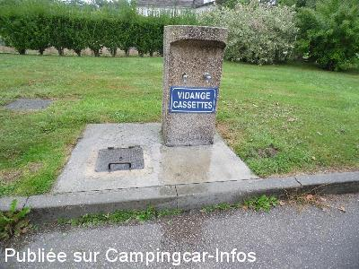
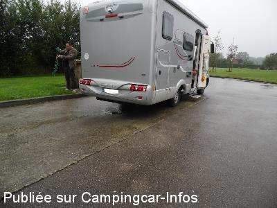
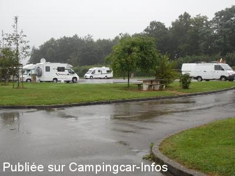
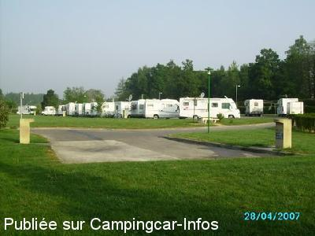

ASN = Aire de services avec stationnement nuit possible de :
FORGES LES EAUX
(N° 622)
Accès/adresse :
Boulevard Nicolas Thiessé
76440 FORGES LES EAUX
76440 FORGES LES EAUX
Latitude : (Nord) 49.60584° Décimaux ou 49° 36′ 21′′
Longitude : (Est) 1.54304° Décimaux ou 1° 32′ 34′′
Tarif : 2014
Stationnement, services du 15/03 au 15/10 : 7,77 €
Passage d'agent pour encaisser
Gratuit en dehors de ces périodes sans service
Type de borne : Artisanale
Services :


Autres informations :
Ouverte toute l'année
40 emplacements, dont certains pour grands C-C
Stationnement limité 48 heures
http://www.normandie-tourisme.fr/hpa/aire-de-stationnement-et-de-service-a-proximite-du-camping-municipal-de-forges-les-eaux/forges-les-eaux/fiche-HPANOR076FS00068-1.html

Le 14/09/2013 par Louisette

Le 14/09/2013 par Louisette

Le 14/09/2013 par Louisette

Le 09/08/2010 par René
de
eastwood
le 15/09/2014 :
De passage pour la nuit le 12 septembre 2014. L'aire se situe juste en face du camping (eau, électricité et aire de jeux pour enfants). L'employé (sympathique)passe récupérer le paiement
Parking bitumé.
Seul bémol : le centre ville à pied est vraiment trop loin ....
De passage pour la nuit le 12 septembre 2014. L'aire se situe juste en face du camping (eau, électricité et aire de jeux pour enfants). L'employé (sympathique)passe récupérer le paiement
Parking bitumé.
Seul bémol : le centre ville à pied est vraiment trop loin ....
de
Eve
le 28/04/2014 :
Vaste parking bitumé près du camping, accès facile,les
vidanges sont bien conçues.Endroit agréable. Pour aller
en ville facilement traverser le camping et sortir par
la petite porte ou prendre la route à gauche de l'aire.
Jolie ville à visiter.Nombreux commerces.
Vaste parking bitumé près du camping, accès facile,les
vidanges sont bien conçues.Endroit agréable. Pour aller
en ville facilement traverser le camping et sortir par
la petite porte ou prendre la route à gauche de l'aire.
Jolie ville à visiter.Nombreux commerces.
de
Louisette
le 14/09/2013 :
Passage sur cette aire, goudronnée, stabilisée, légèrement en pente
Le tarif est à la baisse 6,53 € stationnement, électricité, services.
Passage d'agent pour encaisser
Passage sur cette aire, goudronnée, stabilisée, légèrement en pente
Le tarif est à la baisse 6,53 € stationnement, électricité, services.
Passage d'agent pour encaisser
de
Eric Lambert
le 01/06/2013 :
§
Aire toujours aussi agréable mais stationnement passé à 7,30€.
Cordialement.
§
Aire toujours aussi agréable mais stationnement passé à 7,30€.
Cordialement.
de
qalain
le 18/09/2011 :
Mi septembre, le parking a commencé à se remplir vers 17h, comme d'habitude et il était plein le soir. Beaucoup de passages anglais allemands.
Parking de grande qualité et propreté. Notons l'entretien des espaces verts qui jusqu'au centre ville est irréprochable.
Bravo et merci à la Municipalité
Mi septembre, le parking a commencé à se remplir vers 17h, comme d'habitude et il était plein le soir. Beaucoup de passages anglais allemands.
Parking de grande qualité et propreté. Notons l'entretien des espaces verts qui jusqu'au centre ville est irréprochable.
Bravo et merci à la Municipalité
de
HOUZIAUX ROGER
le 22/06/2011 :
OK pour les pl et c car avec remorque ,mention spéciale pour l acceuil
OK pour les pl et c car avec remorque ,mention spéciale pour l acceuil
de
Morphology
le 02/05/2011 :
Stayed here 1st May 2011. Includes electicity and water. Nice quiet aire. Short walk into town, which boasts a few eateries & pubs. Nice stopover to/from the channel ports.
Stayed here 1st May 2011. Includes electicity and water. Nice quiet aire. Short walk into town, which boasts a few eateries & pubs. Nice stopover to/from the channel ports.
de
Ralph
le 18/10/2010 :
Excellent site about 120 miles from Calais so ideal to and from the ferry. Fee is collected each day.
NB: There is no water or electricity from October 18th to March 18th)
Excellent site about 120 miles from Calais so ideal to and from the ferry. Fee is collected each day.
NB: There is no water or electricity from October 18th to March 18th)
de
Marie José H.
le 03/08/2009 :
Fin juillet, la nuit fut calme et reposante, pas de bruit et accueil agréable par la responsable du camping qui encaisse en faisant son petit tour en fin de journée. Rotisserie sur place ce vendredi !! Arrêt à recommander!!
Fin juillet, la nuit fut calme et reposante, pas de bruit et accueil agréable par la responsable du camping qui encaisse en faisant son petit tour en fin de journée. Rotisserie sur place ce vendredi !! Arrêt à recommander!!
de
jl.delaroche
le 18/06/2008 :
Bonjour. De passage à Forges les eaux, je confirme l'aire n'est plus gratuite. 5,60 € pour 24 h depuis début mai. Dans le futur, le camping devrait fermer et être reconstruit à côté de l'aire et le tout géré par une societé privée. Pour l'instant, l'électricité et l'eau sont des services encore gratuits.
Bonjour. De passage à Forges les eaux, je confirme l'aire n'est plus gratuite. 5,60 € pour 24 h depuis début mai. Dans le futur, le camping devrait fermer et être reconstruit à côté de l'aire et le tout géré par une societé privée. Pour l'instant, l'électricité et l'eau sont des services encore gratuits.
de
jean-Marc
le 23/04/2008 :
Super, génial, une aire où tous les emplacements disposent d'une borne éléctrique et qui, cerise sur le gateau, est gratuite la première nuit, les suivantes à 5€. Pourvu que cela dure, il devrait y avoir d'autres villes qui devraient s'inspirer de ce système. De plus, très propre et calme. A savourer sans modération!
Super, génial, une aire où tous les emplacements disposent d'une borne éléctrique et qui, cerise sur le gateau, est gratuite la première nuit, les suivantes à 5€. Pourvu que cela dure, il devrait y avoir d'autres villes qui devraient s'inspirer de ce système. De plus, très propre et calme. A savourer sans modération!
de
Bauden maurice
le 27/08/2007 :
Sommes passés en juin. Que des éloges, bravo à Monsieur le maire pour cette aire fantastique. Sommes allés manger au resto du centre ville.
Souhaitons que les utilisateurs de cette aire soient reconnaissants aux commerçants de cette charmante ville. Encore bravo!
Sommes passés en juin. Que des éloges, bravo à Monsieur le maire pour cette aire fantastique. Sommes allés manger au resto du centre ville.
Souhaitons que les utilisateurs de cette aire soient reconnaissants aux commerçants de cette charmante ville. Encore bravo!
de
jojo-76
le 16/01/2007 :
Excellent! Gratuit les premières 24 heures, le plein d'eau, les vidange et même l'électicité toute la nuit!
Nuit très calme. Merçi monsieur le maire, votre ville est très agréable.
Excellent! Gratuit les premières 24 heures, le plein d'eau, les vidange et même l'électicité toute la nuit!
Nuit très calme. Merçi monsieur le maire, votre ville est très agréable.